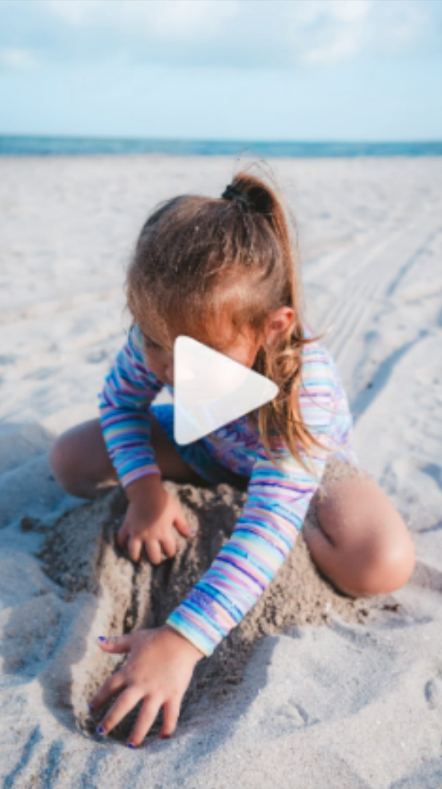
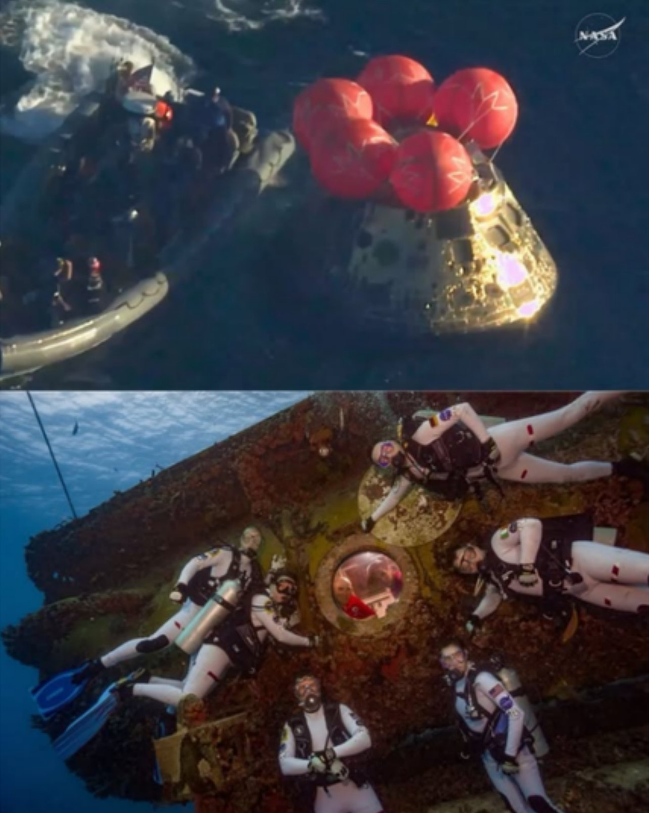
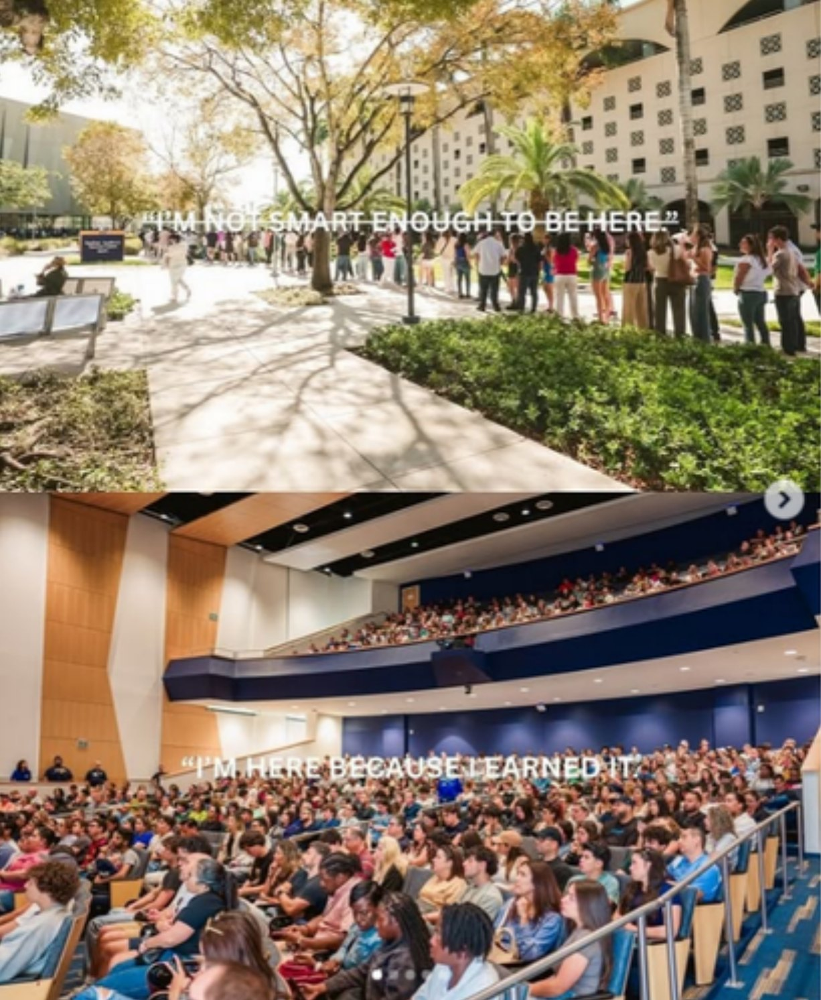
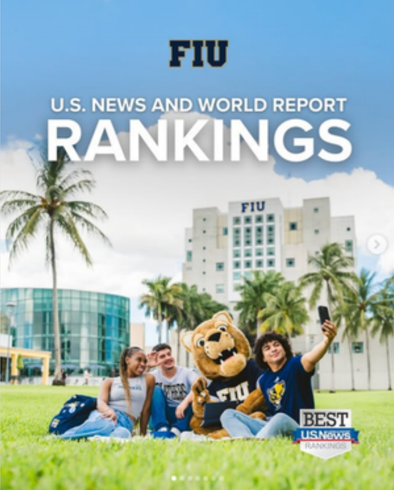
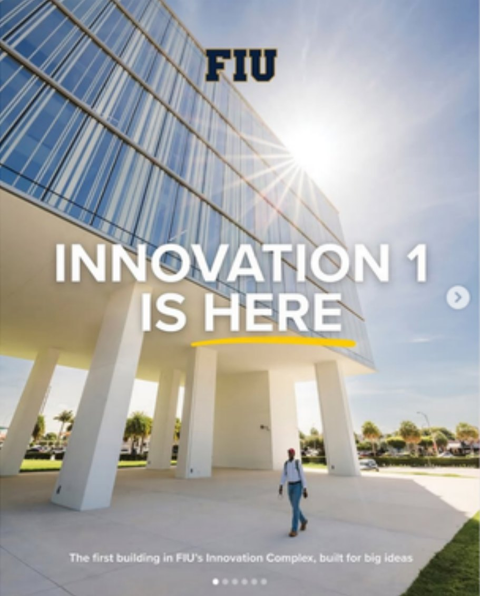

I believe the best brand stories meet people where their attention already is, then give them a reason to stay, share and come back.

Pop culture, translated for campus
From the Backrooms aesthetic to Love Island's reality format, I adapt trends into authentic content that shows real student spaces and personalities, made with the FIU Creators.
Read the case studyTrend-driven, research-backed, real-time, creator-made, brand-safe, measured
 Hidden Mic Trend · 6.1K likes
Hidden Mic Trend · 6.1K likes

Sand Holes Research · 5.3K+ Need a Ride · 1.2K likes
Need a Ride · 1.2K likes
 Football Media Day · 1.0K+
Football Media Day · 1.0K+
Real-time moments, real results
When Artemis II splashed down, I connected it to FIU's Aquarius Reef Base, where astronauts train. One post earned 56.3K Facebook engagements.
Read the case study
Strategy, creative and production in one person, built to keep the brand consistent at speed.
A blend of skills, grounded in data and built for the platforms people use.
Every campaign draws on the same five strengths, refined across a university's social ecosystem and the channels of top Latin music artists.

Made in Miami, for audiences everywhere
I thrive where creativity meets strategy, turning big ideas into clear, emotionally resonant narratives that inspire action and build lasting brand loyalty.
More about me



